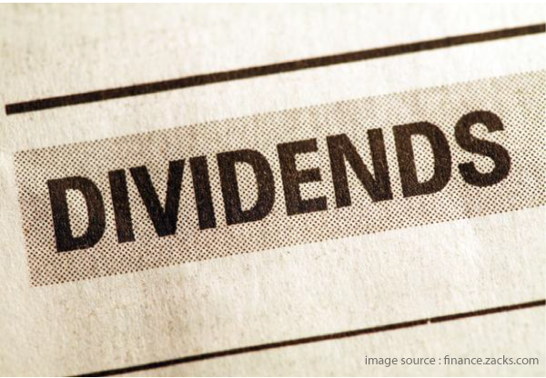
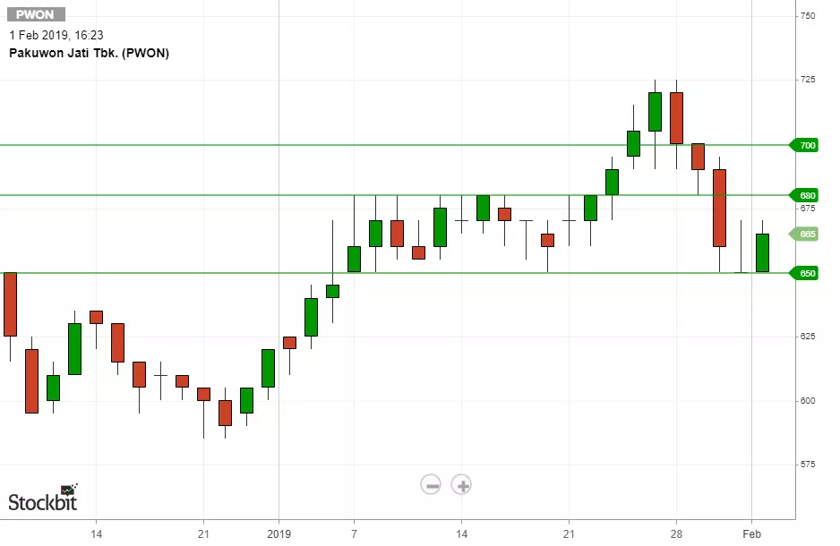
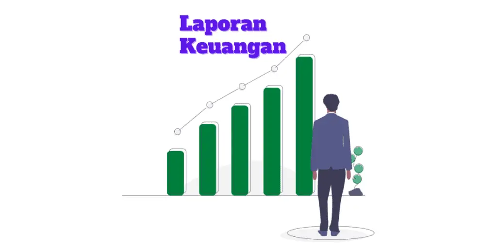
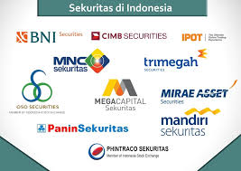
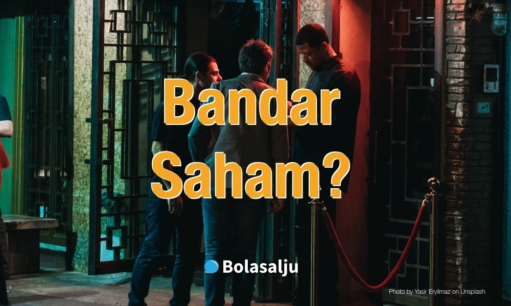

Dividen saham adalah pembayaran dividen kepada pemegang saham yang dilakukan dalam bentuk saham dan bukan sebagai uang tunai.
Risiko investasi saham ini terjadi apabila sebuah perusahaan yang sahamnya dimiliki oleh investor saham tersebut dinyatakan bangkrut oleh pengadilan atau dibubarkan.

Take profit merupakan istilah aksi ambil untung yang dilakukan oleh para trader atau investor. Tujuan utama dari berinvestasi ataupun trading saham tentunya untuk take profit.

Chart atau grafik adalah istilah yang digunakan dalam analisa teknikal, yaitu untuk melihat pergerakan suatu harga saham.

Definisi laporan keuangan adalah laporan yang menunjukkan kinerja keuangan perusahaan dalam jangka waktu periode tertentu.

Analisa fundamental ialah analisa yang didasarkan dengan kondisi ekonomi suatu perusahaan. Analisa fundamental menggunakan indikator perusahaan yang tertera melalui laporan keuangan perusahaan

Sekuritas adalah instrumen keuangan yang mewakili posisi kepemilikan saham dalam perusahaan publik. Dengan kata lain, sekuritas merupakan bukti kepemilikan saham di sebuah perusahaan publik.

Bandar saham merupakan sekumpulan pelaku pasar(memiliki jumlah uang yang besar) yang bisa memainkan serta memanipulasi harga saham.